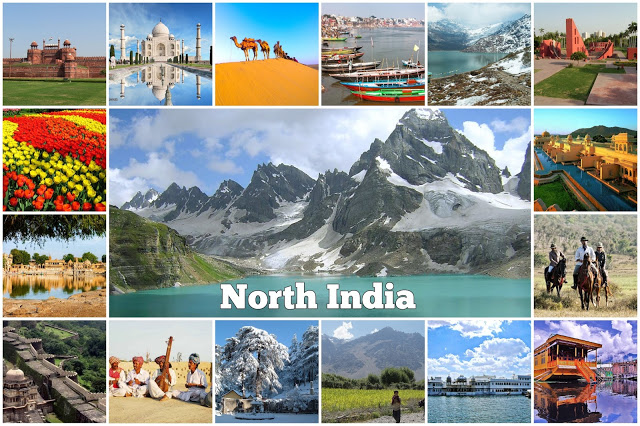
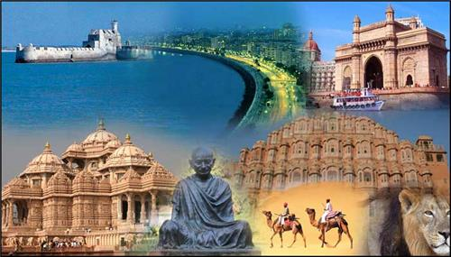
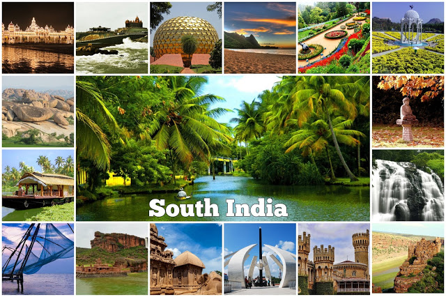

Indian food is different from rest of the world not only in taste but also in cooking methods. It is a blend of various cultures and ages. Just like Indian culture, food in India has been influenced by many different civilizations, which have contributed their share in its overal development and the present form.Foods of India are better known for its spiciness. Throughout India, be it North India or South India, spices are used generously in food. But one must not forget that every single spice used in Indian dishes carries some or the other nutritional as well as medicinal properties.
Food in the North India, to begin with, Kashmiri cuisines reflect strong Central Asian influences. In Kashmir, mostly all the dishes are prepared around the main course of rice found abundantly in the beautiful valley. Another delicious item cooked here is the ‘Saag’ that is prepared with a green leafy vegetable known as the ‘Hak’.But on the other hand states like the Punjab, Haryana and Uttar Pradesh show high consumption of chapatis as staple food. Again, these chapatis are prepared with a variety of flours such as wheat, rice, maida, besan etc. Besides chapatis other closely related breads baked in these regions include Tandoori, Rumaali and Naan etc. However in the northern region impact of Mughlai food is quite obvious.
In Western India, the desert cuisine is famous for its unique taste and varieties of food. Rajasthan and Gujarat are the states that represent the dessert flavor of Indian food. Here an immense variety of dals and achars (pickles/preserves) is used that simply substitutes the relative lack of fresh vegetables in these areas. In the states like Maharashtra, the food is usually a mix of both north as well as south cooking styles. Here people use both the rice and the wheat with same interest. Along the coastline of Mumbai a wide variety of fishes is available. Some of the delicious preparations include dishes like the Bombay Prawn and Pompfret.In Goa, that is further down towards south, one can notice Portuguese influence in the cooking style as well as in the dishes. Some of the major dishes of this region are the sweet and sour Vindaloo, duck baffad, sorpotel and egg molie etc.
In Eastern India, the Bengali and Assamese styles of cooking are noticeable. The staple food of Bengalis is the yummy combination of rice and fish. Usually the Bengalis love eating varieties of fishes. A special way of preparing the delicacy known as ‘Hilsa’ is by wrapping it in the pumpkin leaf and then cooking it. Another unusual ingredient that is commonly used in the Bengali cooking is the ‘Bamboo Shoot’. Various sweets prepared in this region, by using milk include the ‘Roshogollas’, ‘Sandesh’, ‘Cham-cham’ and many more.

In the southern India, the states make great use of spices, fishes and coconuts, as most of them have coastal kitchens. In the foods of Tamil Nadu use of tamarind is frequently made in order to impart sourness to the dishes. It simply distinguishes the Tamil Food from other cuisines. The cooking style of Andhra Pradesh is supposed to make excessive use of chilies, which is obviously to improve the taste of the dishes. In Kerala, some of the delicious dishes are the lamb stew and appams, Malabar fried prawns, Idlis, Dosas, fish molie and rice puttu. Another famous item of this region is the sweetened coconut milk. Yet another dish is Puttu, which is glutinous rice powder steamed like a pudding in a bamboo shoot.
